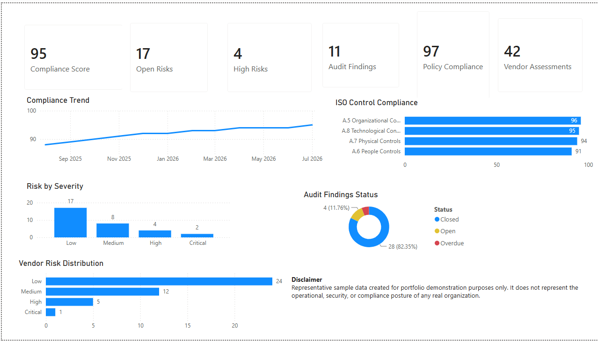

Executive ISO 27001 & GRC Dashboard
ISO 27001 • Governance • Risk • Compliance
Designed for CIOs, CISOs and executive leadership, this dashboard provides a consolidated view of ISO 27001 compliance, governance maturity, enterprise risk, audit performance and vendor risk through executive-level reporting.

Executive Summary
This executive ISO 27001 & GRC dashboard provides leadership with a consolidated view of compliance performance, enterprise risk, audit findings, policy adherence and vendor governance.
The dashboard supports executive decision-making by highlighting governance maturity, compliance performance, remediation priorities and certification readiness through a single executive reporting view.
Business Value
- Executive visibility into ISO 27001 compliance
- Monitor governance and audit performance
- Track enterprise risk posture
- Strengthen policy compliance oversight
- Improve vendor governance
- Support executive decision-making
Key Capabilities
- ISO 27001 Compliance Reporting
- Governance & Risk Management
- Internal Audit Tracking
- Policy Compliance Monitoring
- Vendor Risk Oversight
- Executive KPI Reporting
Technologies Used
Representative Sample Data
This dashboard uses representative sample data created exclusively for demonstration and portfolio purposes. It does not contain employer, customer, confidential or production information.